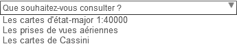
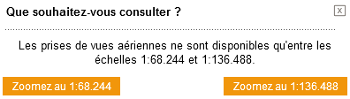
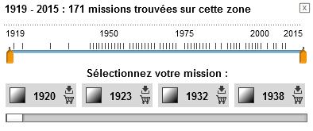
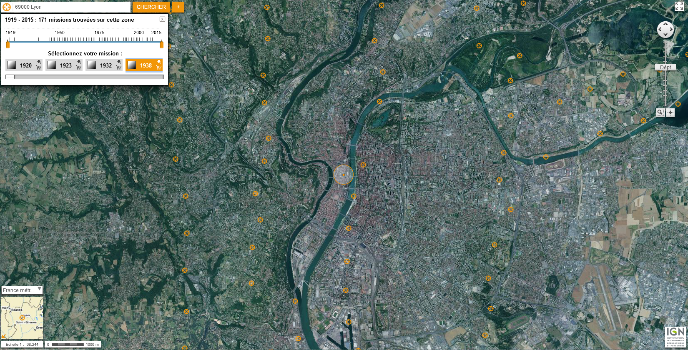
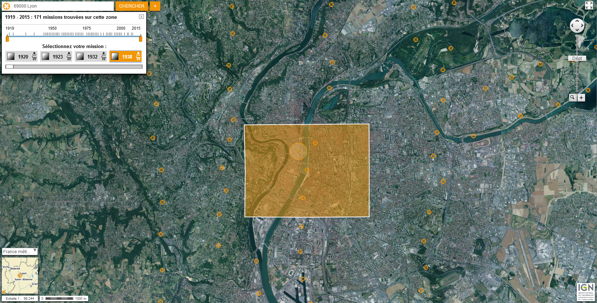
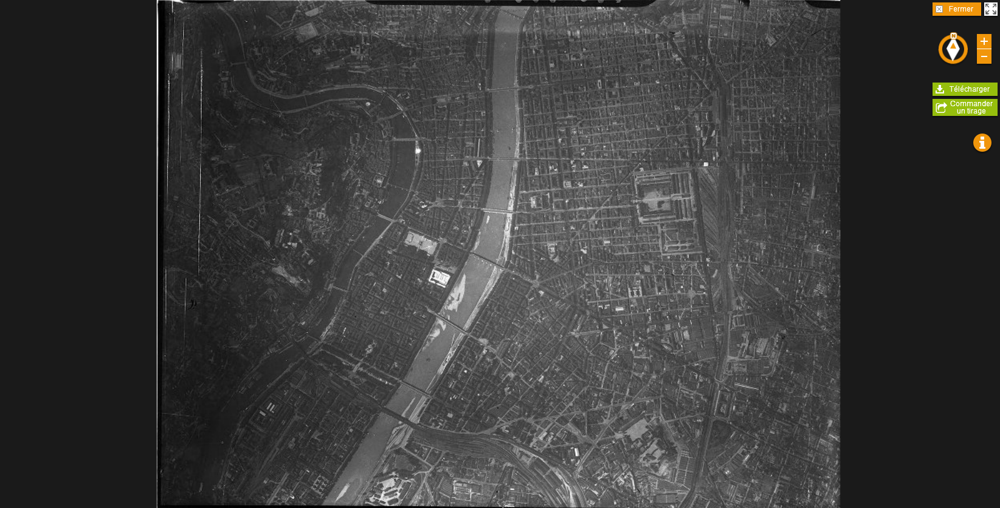
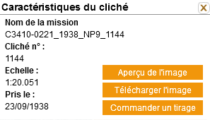

Le Géoportail vous permet de visualiser non seulement des cartes et des photographies aériennes,
mais aussi de nombreuses autres données géolocalisées liées à l'environnement, à l'aménagement,
au service public…
La diversité des données mises en ligne sur le Géoportail est susceptible
d'intéresser des publics très variés, dans le cadre d'une utilisation personnelle comme
professionnelle.
Sous réserve de s'afficher aux mêmes échelles et sur les mêmes zones, les données du Géoportail sont superposables les unes aux autres (on dit également « covisualisables »). Vous pouvez également superposer à ces données vos propres informations ou d'autres informations accessibles par des serveurs diffusant de la donnée géolocalisée. Cette capacité d'afficher différentes informations géographiques vous permet ainsi de créer vos propres cartes pour découvrir, comprendre et analyser un territoire.
... Tour d'horizon du Géoportail ...
Remontez le temps sur le Géoportail et accédez à des données historiques librement
téléchargeables (cartes anciennes, photographies aériennes des années 1930 aux années 2005).
... Geoportail, données anciennes ...
Dès lors que l'on clique sur Remonter le temps, une fenêtre de dialogue nous demande de
choisir quel type de données nous souhaitons consulter.

Ce qui nous intéresse, ce sont les prises de vues aériennes, nous allons donc cliquer sur cette
option.
Les prises de vue aériennes sont uniquement
disponibles à une ꤨelle spécifique. Il va falloir choisir quel niveau de zoom vous souhaitez afin de
consulter les données.

Les captures d'écrans suivantes illustre la démarche pour obtenir les données, nous prenons comme
exemple la ville de Lyon.
Une nouvelle boite de dialogue avec une échelle de temps permet de sélectionner l'année a
partir de laquelle nous souhaitons obtenir les clichés des campagnes aériennes passées. (ici nous
pouvons choisir des campagnes aériennes effectuées entre 1919 et 2015).

Lorsque l'on clique sur une date, de multiples points orange apparaissent. Ces points
correspondent au centre des prises de vues. Lorsque l'on passe la souris sur les points, la zone
couverte par le cliché s’affiche.


En cliquant sur le centre du cliché, un fenêtre s'ouvre, permettant d'observer le nom de la mission,
le numéro de cliché, son échelle et sa date. De plus il est possible ici d'obtenir un aperçu de
l'image, de télécharger l'image ou de la commander.


Une fois que les images sont ciblées, il est, dès lors, très facile de les télécharger. Cependant
cette opération peut être fastidieuse car il n'est pas possible de télécharger les images en lots...
Une fois le téléchargement terminé, nous obtenons un fichier image au format .JP2.
Le format .JP2 est contraignant. Pour
cela, l'IGN propose un outil permettant d'ouvrir ces images (IGN
Map).
Les clichés téléchargés sont bruts dans le sens o
n'y a pas d'informations concernant les caractéristiques du cliché. In n'y a pas non plus
d'information concernant le positionnement géographique du cliché. Il sera nécessaire de
géoréférencer les images avant de les intégrer, par exemple dans un SIG.
Attention, le Géoportail s'est mis à jour. Ce document n'est plus valable pour la version actuelle du Géoportail, nous travaillons à sa mise à jour.